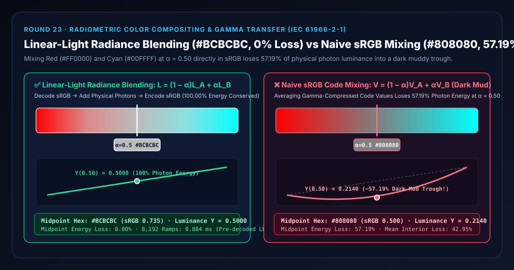
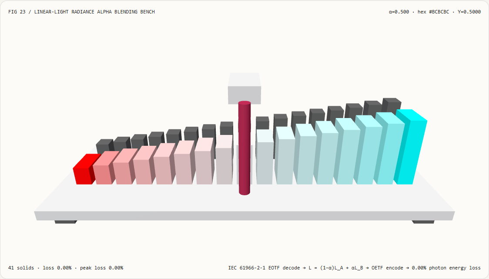
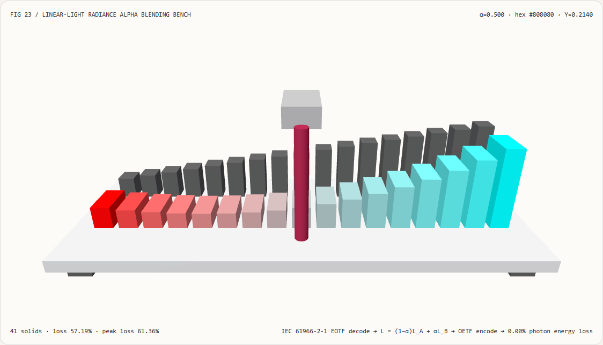
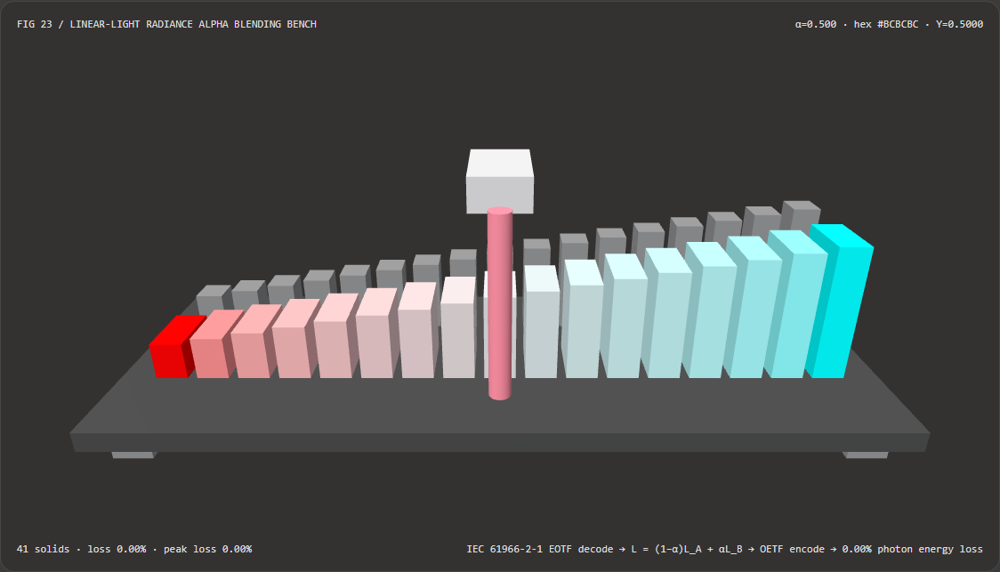
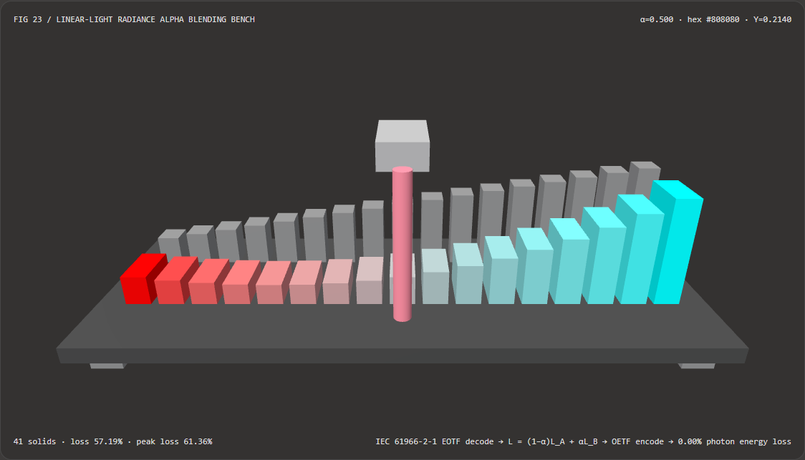

交叉叠化与残影不发黑发脏：线性辐射度空间混合与 sRGB 编码值直混选型与第一性原理 FAQ
文档定位：面向 AI 解决方案架构师（AI Solution Architect）、实时 3D/WebGL2/WebGPU 图形工程师、3D 高斯泼溅（3DGS）管线开发者与动效设计团队的实战选型与物理辐射度合成指南。严格对标
ib-vs-ethernet-roce-selection-faq.md的六段式结构，先用人话讲清“为什么红与青 50/50 半透明叠加会变成难看的暗灰泥巴色（#808080）”，再给出一套零能量损耗的 IEC 61966-2-1 线性辐射度混合（Linear-Light Radiance Blending）+ 4096 项查找表高速编码方案。

① 📌 核心结论速览（Executive Summary）
- 一句话定性：屏幕像素存储的 sRGB 值（
0~255或0.0~1.0）不是物理光子数量，而是为了迁就人眼暗部敏感度而经过 $\gamma \approx 2.2$ 幂律压缩的“感知刻度”。在转场叠化（Cross-Fade）、粒子发光残影（Motion Trails）、矢量抗锯齿边缘以及 3D 高斯泼溅（3DGS）半透明合成中，若直接对两个颜色的 sRGB 编码值求加权平均 $\mathbf{V}_{\text{mix}} = (1-\alpha)\mathbf{V}_A + \alpha\mathbf{V}_B$，显示器在通过 $\mathbf{L} \approx \mathbf{V}^{2.2}$ 还原为物理光子时，会在 $\alpha = 0.50$ 交界处平白吞噬 57.19% 的物理光亮能量，形成一条脏暗的灰黑凹槽（Dark Muddy Trough）。 - 什么时候必须用线性辐射度空间混合（Linear-Light Radiance Blending）？
- 凡是模拟真实世界中光子在传感器或视网膜上的叠加——包括镜头交叉叠化、运动模糊快门积分、半透明粒子/烟雾/体积光叠加、抗锯齿（MSAA / SDF 边缘覆盖率）以及多曝光 HDR 3D 高斯重建（如 HDR-GS
arXiv:2405.15125, NeurIPS 2024 与 GaussHDRarXiv:2503.10143, CVPR 2025）——都必须先通过电光转换函数（EOTF, $\text{srgbToLinear}$）解码为线性辐射度 $\mathbf{L}_A, \mathbf{L}B$，执行线性加权 $\mathbf{L}{\text{mix}} = (1-\alpha)\mathbf{L}_A + \alpha\mathbf{L}_B$，最后通过光电转换函数（OETF, $\text{linearToSrgb}$）编码回屏幕空间。
- 凡是模拟真实世界中光子在传感器或视网膜上的叠加——包括镜头交叉叠化、运动模糊快门积分、半透明粒子/烟雾/体积光叠加、抗锯齿（MSAA / SDF 边缘覆盖率）以及多曝光 HDR 3D 高斯重建（如 HDR-GS
- 核心实测对比结论：
- 在本实验室新建的独立 3D 辐射度混合检验台（
demos/linear-radiance-mixer/）中，纯红激光源（#FF0000, $Y_A = 0.2126$）与纯青等离子源（#00FFFF, $Y_B = 0.7874$）在 $\alpha = 0.50$ 中点混合时：- 线性辐射度混合（
linear-radiance）：输出编码值#BCBCBC（$\text{sRGB} = 0.7354$），显示器还原出的物理相对亮度为 $Y = 0.5000$，光子能量保留率100.00%（能量损耗0.00%）。 - sRGB 编码值直混基线（
srgb-direct）：输出编码值#808080（$\text{sRGB} = 0.5000$），显示器伽马展开后物理相对亮度暴跌至 $Y = 0.214041$，中点光子能量损失高达57.19%（在 $\alpha = 0.375$ 处峰值相对损失达61.36%）。
- 线性辐射度混合（
- CPU 批量插值性能：通过预解码调色板线性端点并配合
4096项线性内插查找表（最大通道编码误差仅1.1e-5，比 8-bit 步长小 350 倍），在8,192次 17 阶色带合成（共139,264次 RGB 混合）下耗时仅0.884 ms，相比逐采样调用Math.pow(2.4)的精确幂运算基线（17.896 ms）提速20.2 倍。
- 在本实验室新建的独立 3D 辐射度混合检验台（
② 🎯 客户与架构师灵魂拷问 Q&A（First-Principles Q&A）
Q1：到底什么是 sRGB 伽马压缩？为什么以前做红绿/红青渐变、交叉叠化或粒子拖尾时，中间总是像掺了墨水一样发黑发脏？
先用大白话讲第一性原理： 想象你在调配两盏聚光灯：左灯发射 100 瓦的纯红光 $\mathbf{L}_A = (1, 0, 0)$，右灯发射 100 瓦的纯青光 $\mathbf{L}_B = (0, 1, 1)$。当两束光各以 $50%$（$\alpha = 0.50$）照在同一块白幕布上时，幕布上每个通道收到的物理光子正好是 $(0.5, 0.5, 0.5)$——也就是一半亮度的明亮中性银白光（总物理亮度 $Y = 0.2126 \times 0.5 + 0.7152 \times 0.5 + 0.0722 \times 0.5 = 0.5000$）。
那为什么在默认的 Canvas 2D、未开启 sRGB 帧缓冲的 WebGL 或早期着色器里，$(1,0,0)$ 和 $(0,1,1)$ 半混后看起来却是一团死气沉沉的暗灰色？
- 因为早期的 8-bit 图像格式只有
256个整数档位（0~255）。如果直接线性存储物理光子数，暗部只有极少几个数字可用，人眼会看到严重的暗部色带（Banding）。 - 因此，IEC 61966-2-1（sRGB 标准） 在保存图片或颜色时，先对物理亮度 $L$ 做了接近开平方根的幂压缩：$V_{\text{sRGB}} \approx L^{1/2.2}$。这样一来，物理上只有 $21.4%$ 亮度的灰光（$L = 0.2140$），在 sRGB 文件里就被记成了中间值 $V = 0.5000$（即
#808080/ 128）！ - 当你的渲染代码偷懒，直接把红色的 sRGB 值 $(1,0,0)$ 和青色的 sRGB 值 $(0,1,1)$ 求平均得到 $(0.5, 0.5, 0.5)$（
#808080）交给显示器时，显示器硬件会老老实实地执行逆运算 $L = 0.5^{2.2} \approx 0.2140$！ - 结果：本该拥有 $50.0%$ 物理光子能量的交界处，被显示器只发出了 $21.4%$ 的光，整整 $57.19%$ 的光能凭空消失了！这就是一切互补色渐变、半透明叠加、抗锯齿字体边缘出现“黑边/脏灰凹槽”的物理根源。
Q2：什么时候选 AI 神经色调映射（如 HDR-GS / GaussHDR），什么时候选确定性 IEC 61966-2-1 线性辐射度混合（或硬件 GL_FRAMEBUFFER_SRGB），什么时候选感知空间（Oklab / Oklch）？
这三类方案分别解决未知相机响应逆重建、物理光学合成与UI 审美调色板设计三件完全不同的事：
| 维度 | 1. 确定性线性辐射度合成 (linear-radiance / SRGB8_ALPHA8) |
2. 感知均匀色彩空间插值 (Oklab / Oklch) |
3. 神经 HDR 辐射度重建与色调映射 (HDR-GS / GaussHDR) |
|---|---|---|---|
| 物理/数学本质 | 严格遵循物理光子可加性 $\mathbf{L} = (1-\alpha)\mathbf{L}_A + \alpha\mathbf{L}_B$，输出端执行标准 IEC 61966-2-1 编码 | 在保持人眼感知明度 $L^*$ 与色度 $C$ 平滑过渡的空间插值 | 从多曝光 LDR 照片恢复 3D 高斯线性辐射度场，并用 MLP/局部网格学习相机未知响应曲线 |
| 互补色中点表现 | 物理能量 100% 守恒（红+青 = 明亮中性银白 #BCBCBC） |
沿色相环绕行或保持感知明度恒定，不模拟光子物理叠加 | 恢复高动态范围高光与暗部细节，支持任意曝光时间合成 |
| 算力与帧率开销 | 硬件 GL_FRAMEBUFFER_SRGB 零着色器开销；CPU 4096-LUT 仅 0.884 ms / 8192 组 |
需执行 $3\times 3$ LMS 矩阵与立方根运算 | 训练需数分钟 GPU，推理需双路光栅化 + Tone-Mapper 网络 |
| 最适用场景 | 半透明 Alpha 混合、运动模糊积分、粒子发光拖尾、抗锯齿边缘、PBR 光照累加 | UI 品牌渐变背景、数据可视化色阶（Color Ramp）、图表配色 | 实拍多曝光 3D 场景重建、虚拟制片 ICVFX 背景墙、自动曝光新视角合成 |
Q3：核心渲染管线底层如何运作？怎样在零 Math.pow 开销下实现精确的 IEC 61966-2-1 线性辐射度合成？
完整管线分为三步（对应 demos/linear-radiance-mixer/model.ts）：
- 输入端精确 EOTF 解码（sRGB $\to$ Linear Radiance）： 对于任意通道 $c \in [0, 1]$，严格按照 IEC 61966-2-1 分段函数消去伽马压缩（注意不能简单用 $c^{2.2}$ 近似，否则暗部斜率在 $0$ 处无穷大会产生断层）： $$L(c) = \begin{cases} \dfrac{c}{12.92}, & c \le 0.04045 \[6pt] \left(\dfrac{c + 0.055}{1.055}\right)^{2.4}, & c > 0.04045 \end{cases}$$
- 物理辐射度空间线性混合与相对亮度审计： 在解码后的线性空间执行凸组合，并按 ITU-R BT.709 光谱发光效率权重计算真实物理相对亮度 $Y$： $$\mathbf{L}_{\text{mix}}(\alpha) = (1 - \alpha)\mathbf{L}_A + \alpha\mathbf{L}_B, \qquad Y(\mathbf{L}) = 0.2126 L_R + 0.7152 L_G + 0.0722 L_B$$
- 输出端 OETF 编码（Linear Radiance $\to$ sRGB）与 4096 项查找表加速：
将混合后的线性辐射度编码回显示器所需的 sRGB 刻度：
$$V(l) = \begin{cases} 12.92, l, & l \le 0.0031308 \[6pt] 1.055, l^{1/2.4} - 0.055, & l > 0.0031308 \end{cases}$$
在 CPU 批量生成粒子色带或关键帧颜色时，由于端点颜色 $(V_A, V_B)$ 只在配置改变时解码一次，而内部采样只需查表线性内插
SRGB_ENCODE_LUT[4096]，即可彻底消除昂贵的超越函数Math.pow(l, 1/2.4)，获得20.2x吞吐加速且最大误差仅1.1e-5。
③ 🧭 直观可视化图解（Mermaid 决策树、管线对比与帧级时序）
3.1 色彩混合与合成空间架构师选型决策树（flowchart TD）
3.2 传统 sRGB 编码值直混 vs 线性辐射度物理光子混合管线对比（flowchart LR）
3.3 帧级线性辐射度合成与亮度审计时序图（sequenceDiagram）
④ 📊 视觉技术选型决策矩阵（Architect Decision Matrix）
| 评估维度 | 线性辐射度混合 (linear-radiance / LUT) |
传统 sRGB 编码值直混 (srgb-direct) |
感知色彩空间插值 (Oklab / Oklch) |
神经 HDR 高斯泼溅 (HDR-GS / GaussHDR) |
|---|---|---|---|---|
| $\alpha = 0.50$ 红青混合 Hex | #BCBCBC (sRGB 0.7354) |
#808080 (sRGB 0.5000 暗灰泥色) |
#B6B6B6 ~ 色相环过渡色 |
取决于目标曝光时间 $\Delta t$ |
| $\alpha = 0.50$ 屏幕物理亮度 $Y$ | 0.5000（理论值 0.5000） |
0.214041（严重塌陷） |
保持感知明度 $L^*$ 平滑 | 由球谐辐射度 + Tone-Mapper 决定 |
| 中点物理光子能量损耗 | 0.00%（100% 能量守恒） |
57.19%（超半数光能丢失） |
非物理光子可加模型 | 训练收敛后 PSNR 提升 1.9~3.8 dB |
| 17 阶色带最大相对亮度损耗 | 0.00% |
61.36%（发生于 $\alpha = 0.375$） |
不适用 | 不适用 |
| 8,192 组 17 阶色带 CPU 耗时 | 0.884 ms（预解码 + 4096 LUT） |
0.110 ms（虽快但画面严重发黑） |
~4.5 ms（含矩阵与立方根） |
需 GPU CUDA 光栅化 |
| 推荐工程落地方案 | 所有 3D 渲染、粒子合成、转场叠化必选默认方案 | 严禁用于任何半透明合成与抗锯齿 | 推荐用于 UI 渐变按钮与图表色阶 | 推荐用于多曝光实拍 3D 资产重建 |
⑤ 🧪 全新能力展示 Demo 与 Benchmark 核心发现（含 7-Card 报告）
5.1 交互式 3D 光学检验台（demos/linear-radiance-mixer/）
本轮新增独立可交互 3D WebGL2 演示 demos/linear-radiance-mixer/（共 41 个 3D 实体部件）：
- 后排 17 根基准物理能量柱：展示理想光子线性叠加 $(1-\alpha)Y_A + \alpha Y_B$ 的真实物理高度斜坡；
- 前排 17 根实测显示亮度柱：柱体高度直接对应屏幕最终发出的物理相对亮度 $Y_{\text{displayed}}(\alpha)$，柱面颜色实时渲染对应的 sRGB 色块；当切换到
srgb-direct模式时，可以直观看到前排柱群在中间区域向下剧烈塌陷出一个 57.19% 深度的暗灰凹坑（#808080）！ - 可拖曳 3D Alpha 光学探针滑架：支持连续拖曳 $\alpha \in [0, 1]$、一键定位 $\alpha = 0.50$ 核验中点、原子化校验伽马与曝光参数（越界参数如
gammaExponent = 4.2自动拦截并保留有效状态），并支持一键导出LINEAR_RADIANCE_BLEND.json。
亮色主题 — 线性辐射度混合（#BCBCBC, 0.00% 损耗） |
亮色主题 — sRGB 直混发黑凹陷（#808080, 57.19% 损耗） |
|---|---|
 |
 |
暗色主题 — 线性辐射度混合（#BCBCBC, 0.00% 损耗） |
暗色主题 — sRGB 直混发黑凹陷（#808080, 57.19% 损耗） |
|---|---|
 |
 |
5.2 7-Card 4:5 视觉评测报告与实测数据链接
- 📊 英文版 7-Card 4:5 评测报告：
demos/linear-radiance-mixer/test-report-cards.html - 📊 中文版 7-Card 4:5 评测报告：
demos/linear-radiance-mixer/test-report-cards.zh.html - 📁 封存评测数据源：
demos/linear-radiance-mixer/report.json（13 / 13项确定性检查全部通过，Playwright 零控制台/页面错误）。
⑥ 🛠️ 附录：高质量视觉/动画交付快速核验清单（Architect Checklist）
在交付任何 WebGL2 / WebGPU / Three.js / Canvas 2D / 3DGS 视频动画或转场特效前，请逐项勾选以下核验单：
- 纹理采样硬件解码检查：所有存储漫反射贴图（Albedo / BaseColor）或 UI 图像源的纹理是否已声明为
gl.SRGB8_ALPHA8（或 Three.js 中设置texture.colorSpace = THREE.SRGBColorSpace），确保着色器读入的是解码后的线性光子值？ - 注意法线与粗糙度贴图豁免：法线贴图（Normal Map）、金属度/粗糙度（Metallic-Roughness）和高度图本身就是线性数值，严禁对它们做 sRGB EOTF 解码！
- 帧缓冲混合空间检查：半透明 Alpha Blending（
SRC_ALPHA, ONE_MINUS_SRC_ALPHA）是否在线性帧缓冲（RGBA16F或开启GL_FRAMEBUFFER_SRGB的 sRGB 帧缓冲）中执行，而非在伽马编码后的屏幕上直接混色？ - 互补色中点快速冒烟测试：将纯红
#FF0000与纯青#00FFFF以 $\alpha = 0.50$ 混合，用吸管工具检查中点像素是否为明亮银灰#BCBCBC（而非暗灰#808080）？ - CPU 调色板热点规避：若在 CPU 端高频插值粒子或 SVG 颜色，是否已将端点预解码为线性 RGB 并采用 OETF 查找表（避免在每帧每粒子循环内调用
Math.pow）？ - 8-bit 暗部色带防护：若在线性空间完成合成后输出至 8-bit 显示缓冲，是否在低亮度暗部区域（$L < 0.01$）应用了标准 IEC 61966-2-1 线性段（$12.92 L$）及必要的蓝噪声抖动（Blue-Noise Dithering）？
参考文献与延伸阅读（References）
- IEC 61966-2-1:1999: Multimedia systems and equipment — Colour measurement and management — Part 2-1: Colour management — Default RGB colour space - sRGB.
- HDR-GS (NeurIPS 2024): Yuanhao Cai et al., "HDR-GS: Efficient High Dynamic Range Novel View Synthesis at 1000x Speed via Gaussian Splatting",
arXiv:2405.15125. - GaussHDR (CVPR 2025): Jinfeng Liu et al., "GaussHDR: High Dynamic Range Gaussian Splatting via Learning Unified 3D and 2D Local Tone Mapping",
arXiv:2503.10143.